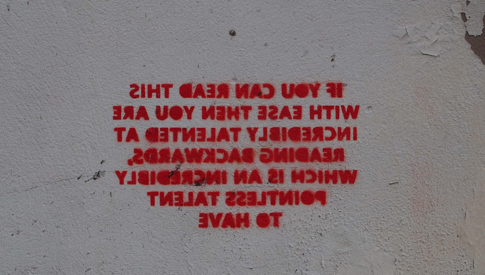
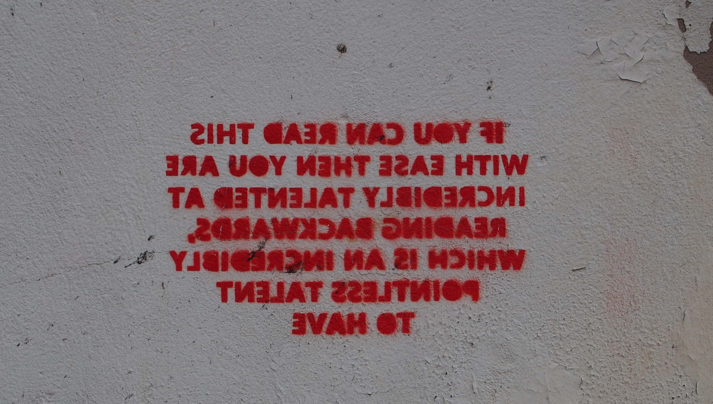

Graffitigasm? - On a wall in Birmingham, U.K.

Graffitigasm? - On a wall in Birmingham, U.K.

Amir sez get paranoid

Try to escape this fun allegorical maze.
The title will make sense once you solve it.
It is often said that the wise are silent. Listeners. That they weigh the evidence before them, before calmly — and collectively — reach a level-headed decision. They don’t jump to conclusions. They don’t put their feet in their mouths. They toe the line. They always keep one eye on themselves and one eye on the world around them, so they know when and how to act.
It was this wisdom, we are told, that built the Pyramids and the Eiffel Tower. It was wise men and women — well, mostly wise men — who knew what to do when the Plague struck down a third of Europe. These men who knew how to respond and what to expect when the Twin Towers fell. Wise people. Brave people. Loud, wise, silent people.
So, of course, we are told to be wise as well. To achieve Great Things, and appreciate Small Things. To listen. To be silent. We are encourage to achieve wonders by being meek. Because all the great people in history started out “small,” too.
“The Greatest Teacher was also the Greatest King! Jesus Christ could have saved the entire planet with less than the snap of his little finger, and he’s coming back from the Sky someday to BEAT UP ALL THOSE MEAN OLD PEOPLE WHO KEEP A-BUGGIN’ YOU. But despite His great power, he just decided to get nailed to a fucking tree stump instead. On Purpose.” We are told.
This is all bullshit, and therefore, we endorse it completely. I mean, shit. You gotta “believe” something, right? Might as well be this! Fuck it! What do we care? It gives you an ethos, keeps you from wandering around the planet stabbing and shooting things (well, hold on. Unless they deserve it. Then it’s OK.) You get to completely ignore the whole “what the fuck is actually happening around me” thing, and everybody else does so fuck, why not you too? Right? So yeah. If you want to believe that what the fuck do we care. You go right ahead and do that until you turn blue in the soul.
ANYWAY…
Here’s the problem.
That story up there? Yeah, it’s bullshit, I know we told you already but listen, you half-spilled bag of turds, that story was concocted and propogated by exactly the same assholes who are now telling you to ignore the old man behind the curtain — and the child under his frock. They will talk for hours on end about how rigtheous you are for doing the Right Thing all the god damn time, while they’re colluding about who to hate next.
And they’re not exactly hiding these days. They are in front of you all the fucking time reminding you who you are and what you believe, and what’ll happen if you DON’T, by Gosh. But while you’re all so busy keeping each other in line, they’re controlling what our children see and hear, they’re literally punishing people for being who they are, and they’re getting us all to hate anyone who wants a better lot in life.
Nobody’s asking you to save the world. Nobody’s asking you to crucify you. All we’re asking is for you toWAKE
THE FUCK
UP
“Privilege”, “cultural appropriation”, “bullying”, “social justice”…
Social Media is teaching very sophisticated ways to be offended.
And that’s a good thing - victims of oppression need better tools and language to resolve injustices. Lets give a megaphone to the systemically silenced. Let’s crowd-source a better world!
But that same defensive language is constantly deployed in lesser battles. There are so many false alarms being sounded. This ultimately diminishes the power of that language.
The same pattern happened during the spiritual awakening of the 60s. Some cracks had developed in the white christian patriarchal hegemony, and hundreds of little religions were born. Being “pagan” was finally okay. Wiccans and Neodruids and flower children embraced alternative spirituality.
But the movement had no immune system. There were multiple people claiming to be the reincarnation of Cleopatra. There were UFO religions. Breatharians. And a lot of people became very deluded. I mean, we’ve all met the guy who considers himself an extremely powerful sorcerer, but in reality, his life is a mess?
The embrace of these alternative spiritual concepts needed to be coupled with a way of separating a useful belief from a useless belief. It’s great that we’re experimenting, but some of these people are objectively wrong, right? Let’s be honest with ourselves: Not every belief is equal.
((As a historical aside, this is where Discordianism came in. Mal and Omar hoped that a religion which was explicitly false, to an obvious and laughable degree would cause the neopagan movement to say “Wait a minute, some of this is bullshit.” —-which would make the movement grow stronger as a whole.))
Internet social justice needs to develop a similar immune system.
Rev Ladymal put it well: “a very bizarre hivemind emerges on social networking sites like these…” Certain groups legitimately endure hatred, and the magic of social media creates an atmosphere where that language of resistance can be shared. And applied to anything. Even when it isn’t appropriate. “Therefore,” (Rev LadyMal continues) “anyone expressing an opinion (i.e. ‘I don’t like liver.’) becomes an oppressor to liverphiles.”
“The folks hurt by this the most are those who live with being a legitimate oppressed group. This nonsense of couching an unpopular opinion into social justice rhetoric are indeed diminishing the power of real social justice.”

Think about it - by the time I’m in my 40s, “What is the most difficult video game you’ve ever beaten?” will be a question they ask presidential candidates.
Some up-and-coming senator will say “Zelda 2” and pole vault himself to front runner status.

Senator Jones (D-NY, XBox Gamerscore: 13350) has the floor. “My opponent claims to have beaten Superman64. This is clearly a publicity stunt—no human being has beaten Superman64.”
My friend Dan says:
The real joy would be to just walk up to the floor like the Strom Thurmond of the electronic gaming age, “My fellow representatives, when I took up Donkey Kong, it was not to promote mindless achievements and meaningless score inflation…”
I pray with all of my heart that in my lifetime, somebody will be unironically described as “The Strom Thurmond of the electronic gaming age”


Back in college, I was in an amazing band called Tea & Scones. Here’s our title track, with me on the beatbox.

Pre-Schoolers drawings Professor Cramulus


Thought-Forms
by Annie Besant & C. W. Leadbeater
Get paranoid. They’re everywhere.

The eternal war between the demagogue and inertia.

In life, the Author had been a large man. Not portly, but broad-shouldered and barrel-chested, with a slight paunch. His beard greyed early, and his hair fell out late. In his current state, though, he was by human standards very large. Completely hairless, his various organs were…